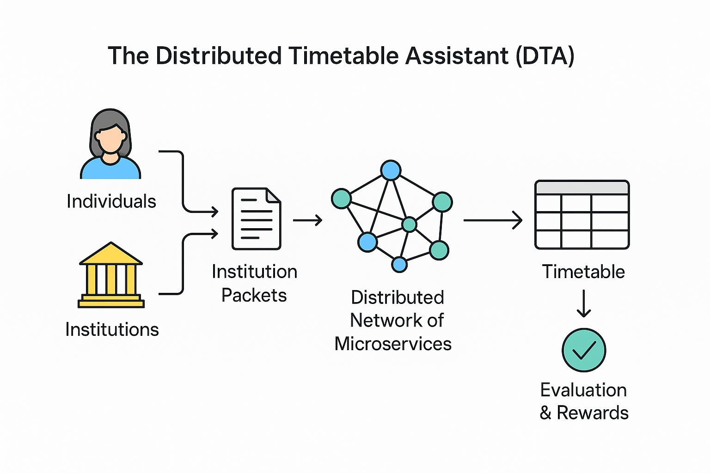

Introduction
Educational scheduling is inherently complex, involving multiple institutions, instructors, supervisors, learners, and limited resources such as classrooms, labs, and physical locations. Traditional centralized scheduling systems often struggle to balance these constraints efficiently, leading to suboptimal timetables, conflicts, and a heavy administrative burden. They rarely accommodate individual preferences, geographic considerations, or adapt quickly to changing circumstances.
The Distributed Timetable Assistant (DTA) was created to address these challenges. By decentralizing the scheduling process, DTA enables a collaborative ecosystem where human and automated participants can propose, validate, and iteratively refine timetable solutions. Each organization defines its own participants, courses, constraints, and resource availability, while independent scheduler services work to optimize schedules across the network. The platform also considers practical constraints, such as locations, distances, and resource utilization, ensuring that generated timetables are feasible, realistic, and efficient for both institutions and participants.
Designed for schools, universities, and online training platforms, DTA offers a scalable, fault-tolerant, and flexible approach to educational planning. Its distributed architecture fosters community-driven collaboration, encourages iterative improvement, and ensures high-quality timetables that better meet the operational needs of institutions, the personal preferences of instructors and learners, and the logistical realities of educational environments.
Overview
The Distributed Timetable Assistant (DTA) is a decentralized platform designed to automate and optimize educational scheduling across multiple institutions, instructors, supervisors, and learners. Unlike traditional centralized scheduling systems, DTA distributes the process of generating and evaluating timetable solutions across multiple independent microservices, enabling scalability, fault tolerance, and open participation.
Each educational organization defines its own set of courses, instructors, supervisors, learners, and facilities. Organizations can specify existing participants or define new ones exclusively for their context. Each instructor, supervisor, and learner also registers in the system, providing their availability and individual preferences. These details are packaged into structured data units known as Institution Packets.
DTA exposes these packets to a distributed network of scheduler services, where participants — human or automated — can propose optimized scheduling solutions. Proposed solutions are validated, scored, and evaluated for rewards before being suggested to the corresponding organization. Accepted solutions receive rewards, and the process of improving schedules can continue iteratively, enabling everyone to collaboratively refine timetables to achieve the best possible outcome. Solvers can even propose adjustments to the organization’s parameters, helping schedules converge faster or escape potential deadlocks.
The platform is built with modularity and interoperability in mind. Its backend consists of Rust-based microservices orchestrated via Kubernetes, while the frontend provides web interfaces for administrators, instructors, and organizations to manage their data and visualize results. Through this distributed architecture, DTA enables flexible, large-scale, and community-driven educational scheduling — suitable for schools, universities, and online training platforms.
